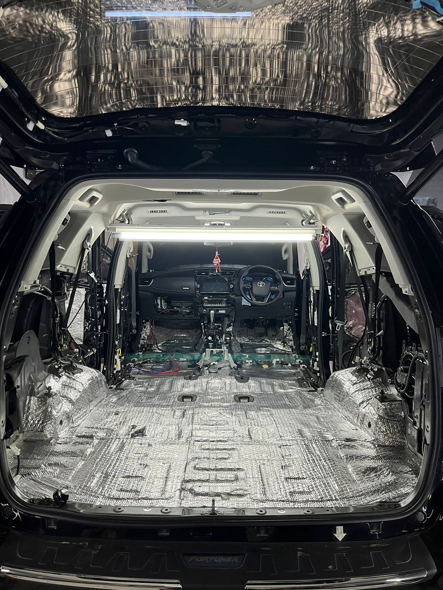
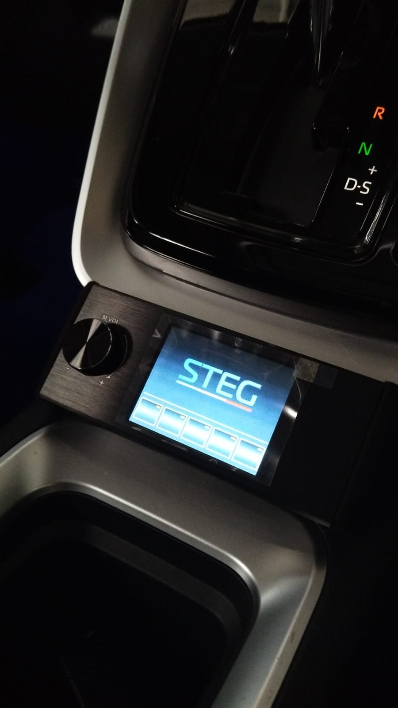

Instalasi Sound Quality (SQ)
Pemasangan sistem audio secara presisi untuk **kualitas suara detail dan panggung yang luas**.
Tentang Kami
Berpengalaman dalam dunia audio mobil dan peredam mobil, Concerto Malang hadir untuk memberikan pengalaman berkendara yang lebih menyenangkan.
Kami melayani dengan sepenuh hati dan memberikan solusi yang sesuai dengan kebutuhan Anda, fokus pada **kualitas, kerapian, dan detail akustik.**
Kalibrasi akustik menggunakan RTA untuk hasil **Sound Quality (SQ)** dan **Sound Pressure Level (SPL)** yang presisi.
Kami menjamin kerapian *wiring* dan keamanan kelistrikan mobil Anda, sesuai standar internasional.
Semua layanan kami dilengkapi dengan garansi fungsional. Anda puas, kami lega.
Layanan
Pemasangan sistem audio secara presisi untuk **kualitas suara detail dan panggung yang luas**.

Mengurangi kebisingan jalan (noise) secara signifikan untuk **akustik kabin yang optimal**.

Solusi audio yang dirancang khusus untuk Anda, termasuk **penyetelan Digital Signal Processor (DSP)**.
Kemitraan


Katalog Produk

DSP 6 Channel dengan output daya besar, ideal untuk sistem audio 3-way. Termasuk tuning profesional.
Fitur: Output Hi-Power & 32bit Processing.

Set speaker komponen 6.5 inci dengan karakter suara yang hangat dan detail. Sangat baik untuk SQ entry-level.
Fitur: Karakter Warm Sound & High Clarity.

Subwoofer 10 inci berkarakter bass lembut dan akurat, cocok untuk sistem Sound Quality yang minimalis.
Fitur: Bass Akurat & Box Minimalis.
Info & Edukasi
Instalasi kami dilakukan secara profesional dengan memprioritaskan penggunaan **konektor *plug-and-play*** dan menghindari pemotongan kabel orisinal mobil, terutama pada mobil baru. Kami berupaya meminimalkan risiko kerusakan garansi dan selalu berkonsultasi dengan Anda.
DSP adalah otak dari sistem audio modern. Fungsinya untuk memproses sinyal digital, memungkinkan kami melakukan **tuning, kalibrasi waktu tunda (time alignment), dan koreksi frekuensi** secara presisi. DSP sangat penting untuk mencapai **Sound Quality (SQ)** yang sempurna.
Sangat disarankan. Peredam (damping) berfungsi mengurangi getaran panel mobil dan kebisingan jalan. Ini akan membuat suara *speaker* lebih fokus, *bass* lebih padat, dan **meningkatkan performa keseluruhan sistem audio** secara drastis.
Hubungi Kami
Hubungi kami via WhatsApp, respons cepat, dan dapatkan jadwal instalasi terbaik.
Mulai Chat Kami!
**Concerto Audio Malang**
Jl. Ciliwung No.57 A, Purwantoro, Kota Malang.
Senin - Jumat: **08.00 - 17.00**
Sabtu: **08.00 - 12.00**
Minggu: **Tutup**